Your card held 1,093 JPEGs. Every one since June 23 was shot on the light-bulb white balance, which is why the last 286 came out blue. One button fixes that. Here's that fix, four more, and how to run this camera after that.
P1003746INC · f/6.3 · 1/25 · ISO 6400fix this first: AWB
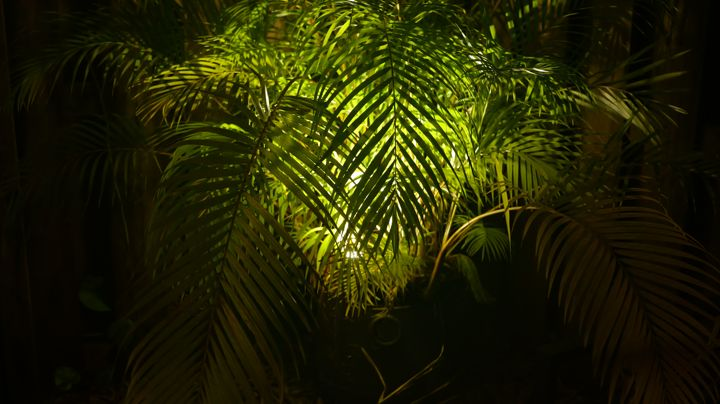
P1003671INC · f/3.2 · 1/60 · ISO 6400P1004066INC · f/2 · 1/2000 · ISO 100
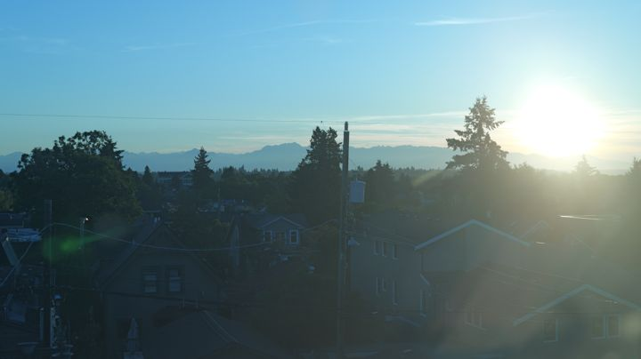
P1003822INC · f/6.3 · 1/250 · ISO 100
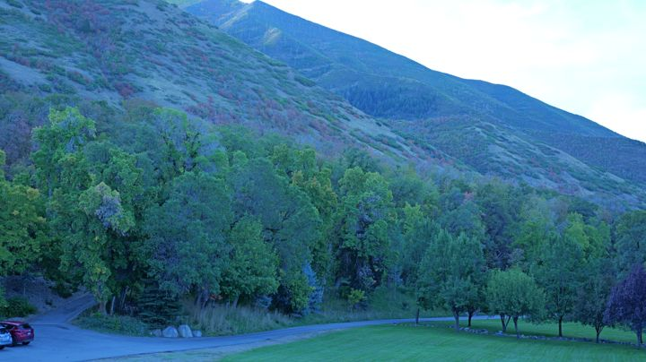
P1004061INC · f/2 · 1/640 · ISO 100
Fix these five, in this order.
About fifteen minutes with the camera in your hands. Tick each one as you go; this page remembers on this device.
0 of 5 done on the camera
Put white balance back on Auto.
Press WB on the top plate, turn a dial to AWB, half-press the shutter. There's no white balance item in the menus; it lives on that button.
Why: Incandescent tells the camera the light is orange tungsten, so it adds blue to cancel it. Outdoors there's no orange to cancel, so everything just goes blue. Auto reads the real light on every frame. (AWBc strips warmth from indoor light, AWBw keeps it. Plain AWB is the right default.)
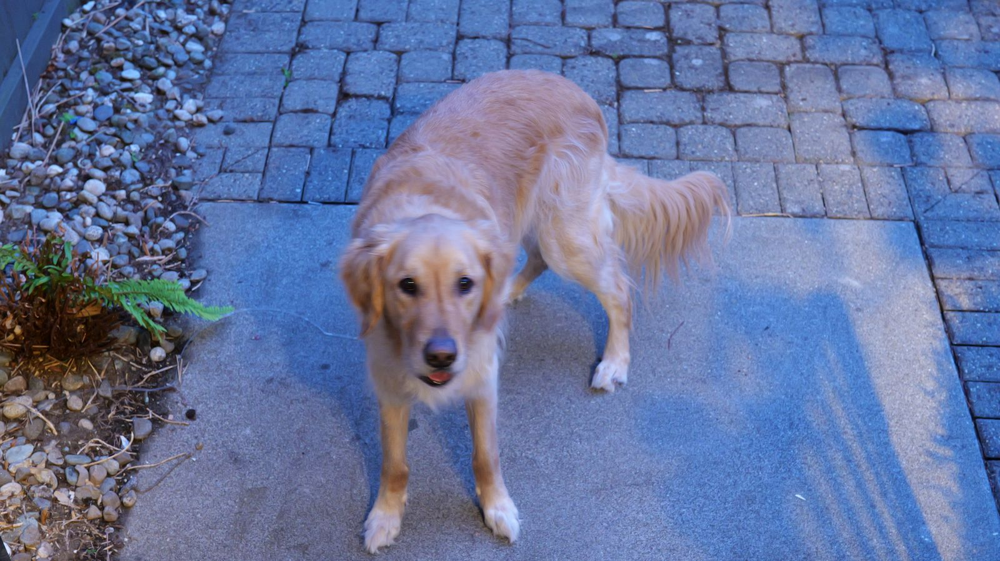
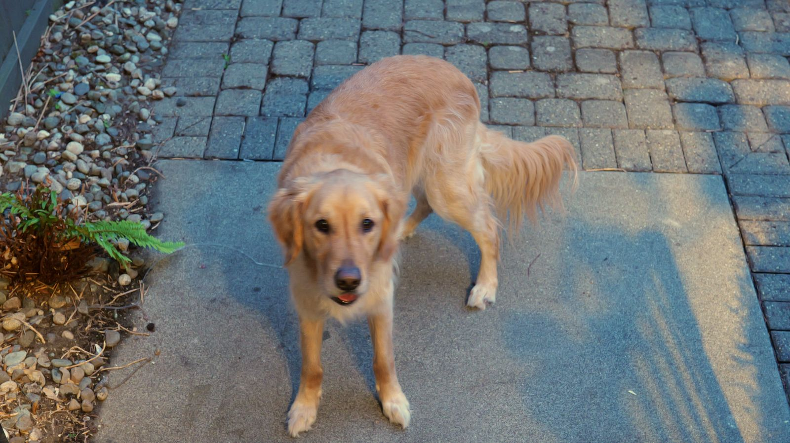
IncandescentAuto, in the glass
Drag the glass around. The fix here is simulated from the JPEG; the camera does it properly, for free.
Shoot RAW+JPEG.
MENU›Photo›Image Quality›Picture Quality›RAW+FINE
Why: a JPEG is the camera's final answer, with white balance and clipped highlights baked in. A RAW keeps what the sensor saw, so wrong white balance becomes a slider instead of a ruined photo. JPEG goes to Google Photos, RAW stays on the Mac as the negative.
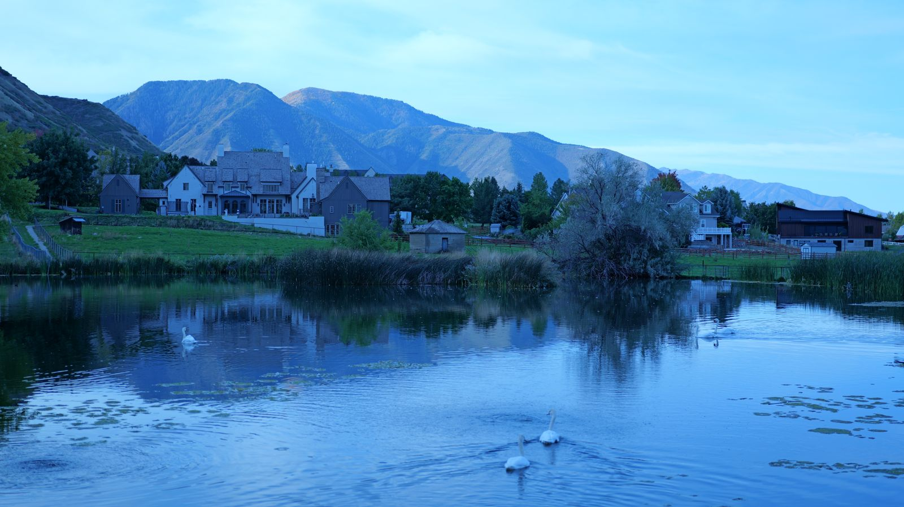
P1004066 · INC · f/2 · 1/2000 Straight out of the camera.
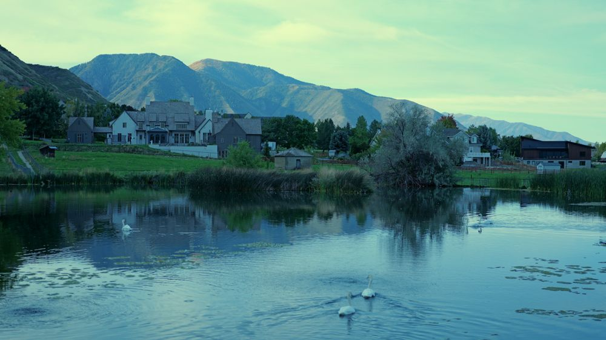
Best rescue from the JPEG. Blue was maxed out in 86% of the upper sky, so pulling blue down turns it green. That data is gone; a RAW still has it.
It costs space: about 74 MB a shot, so roughly 200 shots on your 16 GB card. The counter on the screen is the real number.
Shoot the full 3:2 frame.
MENU›Photo›Image Quality›Aspect Ratio›3:2
Why: the sensor is 3:2. 16:9 chops the top and bottom off and throws away 16% of your pixels, which happened on 803 of your 1,093 frames. You can always crop to widescreen later. You can't uncrop.
Set the clock and time zone.
MENU›Setup›Others›Clock Set then Setup›Others›Time Zone
Why: your files are stamped UTC+1. A wrong zone puts photos on the wrong day, so your ~/Pictures/YYYY-MM-DD folders and your Google Photos timeline sort wrong. Change the zone when you travel.
Update the firmware to 3.7.
Why: you're on 3.0. Version 3.1 and later read the color tag on your looks (without it the camera treats them as V-Log), add look strength (opacity), 39 look slots and the LUMIX Lab app. Later versions add more subject detection and a shutter speed limiter. Do this before loading looks.
Copy the .bin file to the top level of the card. Only one firmware file at a time.
Full battery, no cables plugged in, Wi-Fi and Bluetooth off.
MENU›Setup›Others›Firmware Version›Firmware Update. Takes 3 to 5 minutes. Don't turn it off.
Check the same screen says 3.7.
What your contact sheet says.
1,093 JPEGs from April 2025 to October 2026, all on the 50mm. The pencil marks are the patterns worth breaking.
286on Incandescent WB
803cropped to 16:9
206at ISO 6400
188slower than 1/60
91at f/22
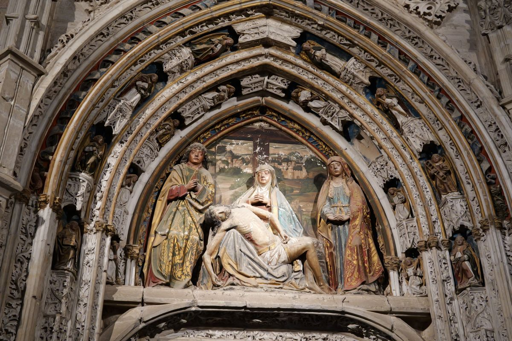
P1001124 · f/9 · 1/30 · ISO 6400
Night, at f/9.
open up: f/2.8 = ISO 640
f/9 buys depth you don't need on a flat facade and costs over three stops of light. The camera paid for it with ISO 6400, which is the grain. At f/2.8 the same shot is ISO 640. At f/1.8, ISO 250. That's what C2 is for.
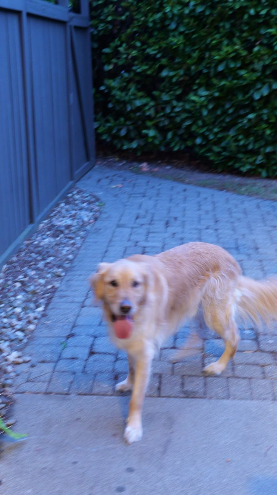
P1003760 · f/6.3 · 1/15 · ISO 6400
A moving dog at 1/15.
f/1.8 = 1/180. or turn to C1.
1/15 can't freeze a dog. The aperture was the cause: at f/1.8 the same light gives about 1/180. With a Min. Shutter Speed floor (see Exposure) the camera wouldn't have dropped that low in the first place.
P1003131 · f/1.8 · 1/5000 · ISO 100
Rooftops, wide open.
places want f/8
The opposite mistake. f/1.8 in full sun gave 1/5000 and a thin slice of focus. f/8 makes the whole city sharp and still gives 1/250. Wide open is for dim light and soft backgrounds.
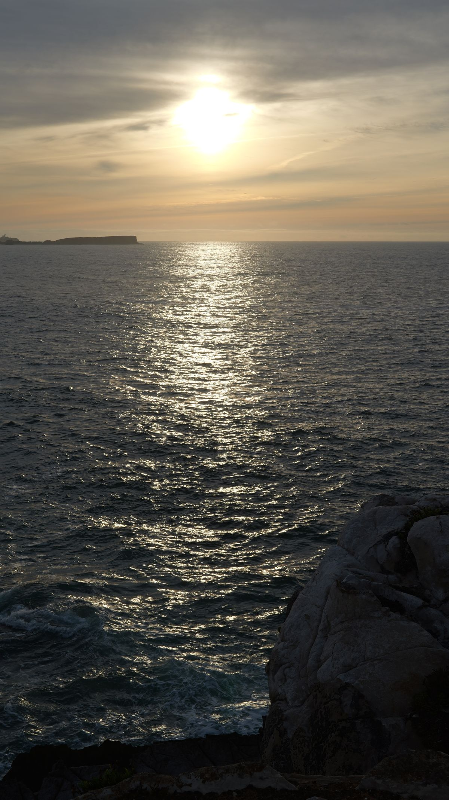
P1002736 · f/16 · 1/100 · ISO 100
Sunstar at f/16.
good call. f/22 isn't.
Small apertures turn the sun into a star, and f/16 is the place to stop. This lens is sharpest from f/2.8 to f/11; past f/16 diffraction softens everything. 91 of your frames were at f/22.
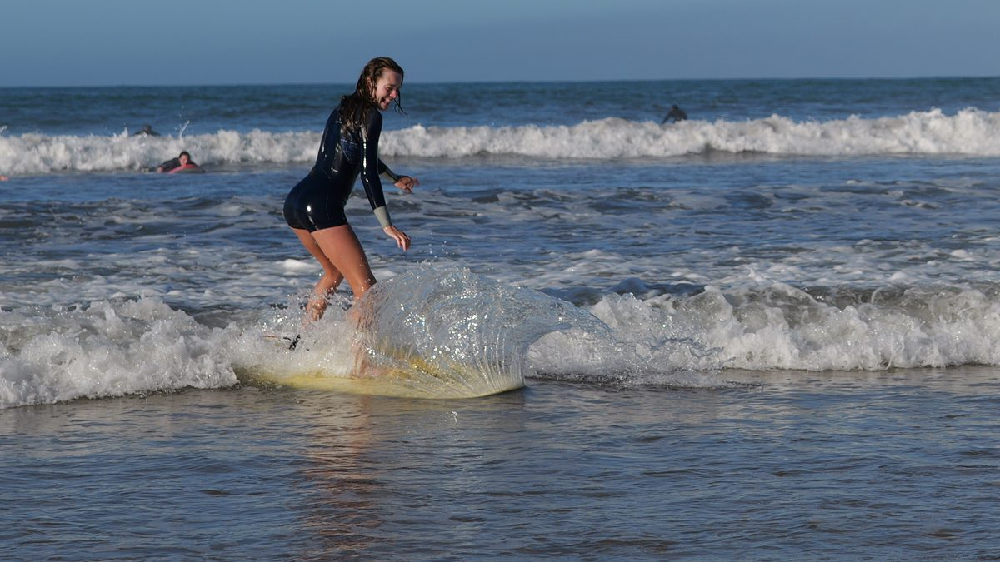
P1002914 · f/4 · 1/2000 · ISO 100
Surf at 1/2000.
keeper. more of this.
Fast shutter froze the spray into a sheet of glass, f/4 kept the rider sharp, ISO stayed at base. Good light, right settings. Every section below is about getting this result on purpose.
Live on A. Save the rest to C1, C2, C3.
The mode dial is this camera's profile system. Set the camera up, save it to a C slot, and it comes back every time you turn to it. Tap a position.
A
Aperture priority
home base
You choose the aperture, which is the look. The camera chooses shutter and ISO. With a Min. Shutter Speed floor it raises ISO before the shutter gets slow enough to blur.
Aperture
Start at f/2.8. f/1.8 for dim light, f/8 for places.
ISO
Auto
Min. shutter
1/125
Focus
Lever on C, Full Area + Human detection
Files
AWB, RAW+FINE, 3:2
Save a C slot
Turn to A and set it up the way the A readout says.
C3 holds three sub-slots out of the box. Make it four: Setup›Setting›Custom Mode Settings›Limit No. of Custom Mode.
Setup›Setting›Save to Custom Mode, pick C1. Repeat for C2 and C3-1 through C3-4. Your A setup is now copied everywhere.
Turn to each C slot, change only what its readout lists, and save it back to the same slot.
Name them: Custom Mode Settings›Edit Title. ACTION, LOWLIGHT and so on show on screen when you turn the dial.
Know the catches
A C slot is a snapshot. Change something while you're on C1 and it snaps back the next time you turn the dial. Change A and it stays.
Physical controls aren't saved. The drive dial (top left, for burst) and the focus lever (back) stay wherever you leave them, so flip them yourself.
Positions are shown in the order the manual lists them; your dial's engraving is the reference.
Aperture is the look. Shutter is the blur. ISO is the price.
On A you only pick one of the three. Pick the aperture for what should be sharp, and set two limits once so the camera can't make the expensive choices for you.
f/1.8Night, indoors, soft backgrounds. The dog in the evening.
f/2.8People, street at night. Sharper than 1.8, nearly as bright.
f/4Two people, both in focus.
f/5.6Groups, street in daylight.
f/8Landscapes and cities. Everything sharp.
f/11Deep scenes, near to far. Still sharp.
f/16Sunstars only. Softening starts.
f/22Diffraction mush. 91 of your frames.
The S 50mm f/1.8 is sharpest from f/2.8 through f/11, per Photography Blog's test. Past f/16, diffraction softens everything.
Set a shutter floor
MENU›Photo›Image Quality›Min. Shutter Speed›1/125
With Auto ISO, the camera keeps the shutter at 1/125 or faster and raises ISO instead. A little grain beats a blurry photo every time. Works in P and A. Your 188 frames slower than 1/60 would have traded blur for grain.
Too bright, too dark
Press +/− on the top plate and turn a dial. ±5 stops for photos, ±3 for video. If a bright sky is washing out, try −1.
Make it visible: Custom›Monitor / Display (Photo)›Histogram and Blinking Highlights in the same menu. Blinking areas on playback are blown out.
Let the camera find the eye.
Focus is three physical controls and one choice. Get these right and the S5II tracks faces and dogs on its own.
Focus lever on the back to C. AFC keeps focusing while you half-press, so a moving subject stays sharp. S locks once, for things that sit still. MF is manual.
Press [⊡] AF mode and pick Tracking for moving subjects or Full Area for people. Turn detection on in that same screen and set Detecting Subject to Human or Animal.
The joystick moves the focus box when you want to choose the spot yourself.
Optional: back-button focus.Custom›Focus/Shutter›Shutter AF›OFF. Now AF ON focuses and the shutter only fires. Focus once on a still subject and recompose freely.
Focus settings by subject
Subject
Lever
AF mode
Dog, kids, surf
C
Tracking + Animal or Human
People posing
C
Full Area + Human
Buildings, landscapes
S
1-Area
Through glass or a fence
S
Pinpoint, or MF
Four film stocks, already on your card.
A look is a LUT: a color recipe the camera bakes into the JPEG. The RAW stays neutral, so a look you hate later costs you nothing.
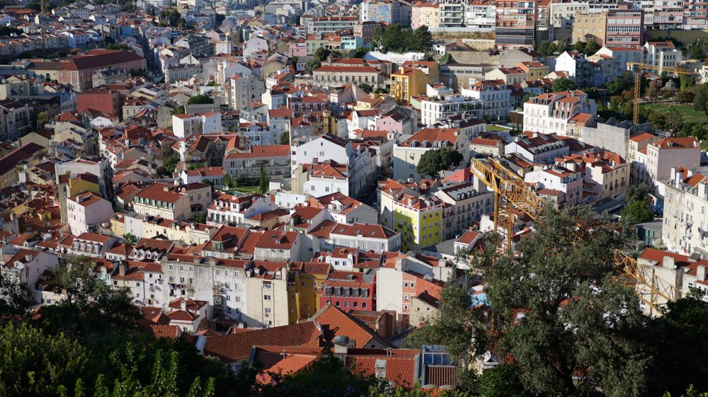
Natural, no look. The base every look is built on.
Previews are rendered on a Mac from a corrected JPEG, so they're close, not exact.
Load them (after firmware 3.7)
The four .cube files are already on the top level of your card.
Custom›Image Quality›LUT Library, pick an empty slot, Load, Card Slot 1, pick the file. Repeat for all four.
Photo›Image Quality›Photo Style, pick My Photo Style 1, base Natural, set its LUT to the look and its opacity to taste. One My Photo Style per look.
Save each into its C3 slot as described in the dial.
Why they're built on Natural
Each file is tagged #LUMIXPHOTOSTYLE NAT under its title line. Firmware 3.1 and later read that tag and start from Natural. An untagged file gets treated as V-Log, which is why loading looks before the update is a waste.
Regenerate or tweak them on the Mac with ./lumix.py luts and push to the card with ./lumix.py push.
Video: three settings and one rule.
Turn the dial to the movie camera (Creative Video) and use M. All four run fine on a V30 card. Most of what makes footage look good is the shutter rule below.
1/60 at 30p, 1/125 at 60p. That's the motion blur your eye reads as "film." In daylight at f/1.8 it overexposes, and there's no built-in ND, so carry a 67 mm variable ND filter for this lens.
The rest
Stabilization: body I.S. is always working. Add E-Stabilization (Video) when walking, Boost I.S. (Video) for still handheld shots.
Color: Standard or Natural if you won't grade. V-Log only if you will; it looks flat until you do.
Space: 150 Mbps is about 14 minutes on your 16 GB card and nearly two hours on a 128 GB one.
Copy it off. Check it. Then wipe it in the camera.
Your card is empty now: all 1,275 files were matched byte for byte against ~/Pictures before anything was deleted. It wasn't formatted. Next time, this is the routine.
After every shoot
Use a card reader. Faster than USB from the camera, and it doesn't drain the battery.
Copy into ~/Pictures/YYYY/YYYY-MM-DD, RAW (.RW2) next to its JPEG.
JPEGs to Google Photos. RAWs stay on the Mac as your negatives.
Check the counts match, then format in the camera: Setup›Card/File›Card Format. Formatting in the camera keeps the card the way the S5II expects it.
Back up your setup
Once the dial is set up: Setup›Card/File›Save/Restore Camera Setting›Save, name it DAILY. Then run ./lumix.py backup to copy it to the Mac.
That file is the only way to load a whole setup back into the camera. Names are up to 8 capitals and numbers, ten files per card, S5II only.
Buy a bigger card
A 128 GB V30 SDXC. That's all this body needs, even for 4K 60p. The second slot can hold a backup copy of every shot: Setup›Card/File›Double Card Slot Function.
The field card.
Everything above on one page. Print it, fold it, keep it in the bag.
S5II field cardkeep in the bag
The dial
A
Everyday. f/2.8 people, f/8 places. Auto ISO, min 1/125, lever C.
C1
ACTION. M 1/1000 f/2.8, Auto ISO, Tracking. Drive dial to burst.